Contents
Fuel mix analysis demo creating contour plots
Uses a fixed electron temperature for all computations.
- to make the colormaps uniform: caxis([0.2 50]) - to lighten the colors: brighten(0.5)
Reference: Carpenter 1999, Figure 4
%-------------------------------------------------------------------------- % See also: PowerDHe3, Synchrotron %-------------------------------------------------------------------------- %-------------------------------------------------------------------------- % Copyright (c) 2018 Princeton Satellite Systems, Inc. All rights reserved. %-------------------------------------------------------------------------- ratios = logspace(-1.6,0.5); temps = linspace(40,140); d = PowerDHe3; ne = 4e20; zI = [1 2]; b = 5; d.tE = 30; % electron temp d.fD = 1; % as low as 0.25 d.fT = 1; pF = zeros(length(temps),length(ratios)); pN = []; pB = []; pS = [];
Model with equal temperatures, full T; electron temp is 0.9 Ti
d.fD = 1; % as low as 0.25 d.fT = 1; for k=1:length(ratios) % calculate ion densities from electron density assuming fuel ratio den = 1 + 2*ratios(k); density = 1/den*ne; d.nD = density; d.nHe3 = density*ratios(k); for j = 1:length(temps) d.tHe3 = temps(j); % potentially uo to 140 keV d.tD = temps(j); % potentially 70 keV d.tE = 0.9*temps(j); % these are powers in MW per cubic meter [pF(j,k), pN(j,k), pB(j,k), nNd, nNt] = PowerDHe3( d ); pS(j,k) = Synchrotron( [d.nD d.nHe3], zI, b, d.tE ); end end MakePlots( ratios, temps, pN, pB, pS, pF,... [2 3 4 5 6 7 8 9 10 20 30 40 50], 'D-D and D-T' ) drawnow;
 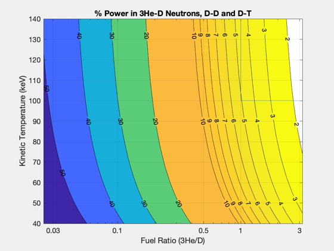 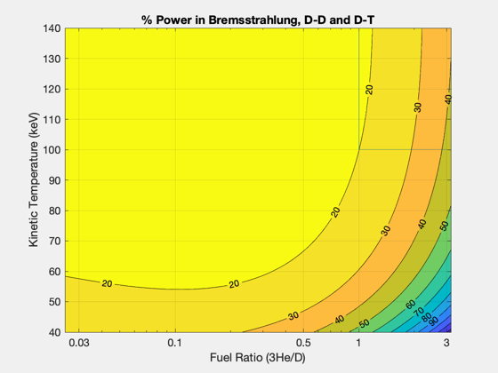 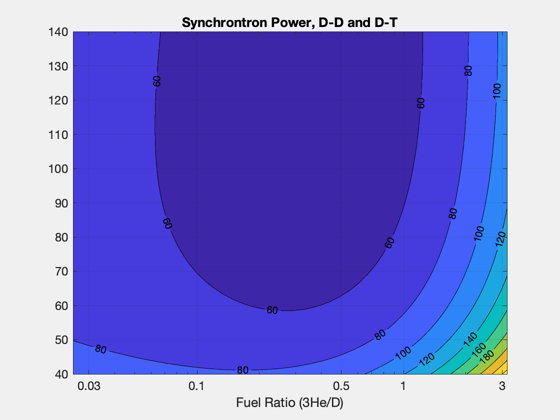
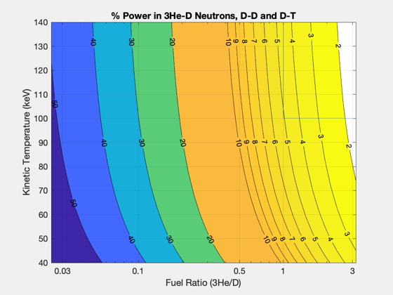 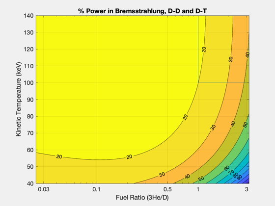 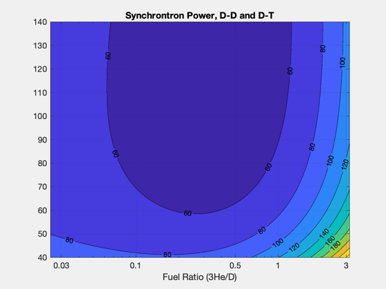 Model with equal temperatures, all T removed
d.fD = 1; % as low as 0.25 d.fT = 0; d.tE = 30; % electron temp pF = []; pN = []; pB = []; pS = []; for k=1:length(ratios) % calculate ion densities from electron density assuming fuel ratio den = 1 + 2*ratios(k); density = 1/den*ne; d.nD = density; d.nHe3 = density*ratios(k); for j = 1:length(temps) d.tHe3 = temps(j); % potentially uo to 140 keV d.tD = temps(j); % potentially 70 keV % these are powers in MW per cubic meter [pF(j,k), pN(j,k), pB(j,k), nNd, nNt] = PowerDHe3( d ); pS(j,k) = Synchrotron( [d.nD d.nHe3], zI, b, d.tE ); end end MakePlots( ratios, temps, pN, pB, pS, pF,... [0.3 0.5 1 2 3 4 5 6 7 8 9 10 20], 'zero D-T' ) drawnow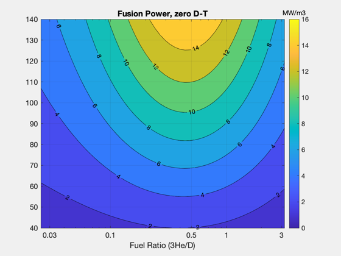 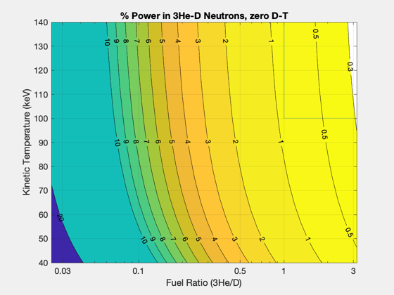 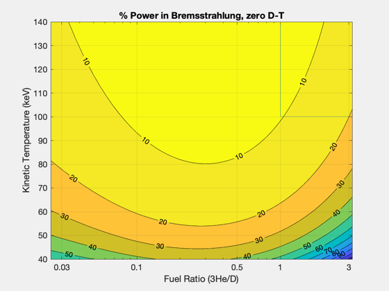 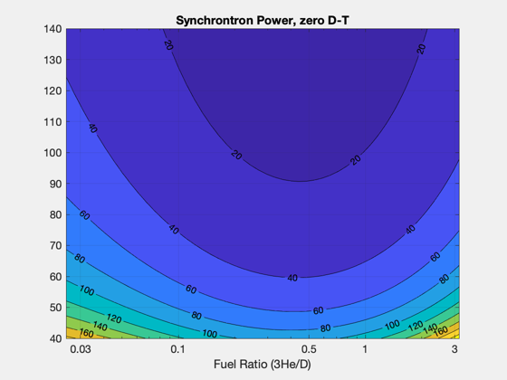
Model with different temperatures
temps2 = linspace(70,140); d.fD = 1; % as low as 0.25 d.fT = 0; d.tD = 70; % potentially 70 keV d.tE = 30; % electron temp pF = []; pN = []; pB = []; pS = []; for k=1:length(ratios) % calculate ion densities from electron density assuming fuel ratio den = 1 + 2*ratios(k); density = 1/den*ne; d.nD = density; d.nHe3 = density*ratios(k); for j = 1:length(temps2) d.tHe3 = temps2(j); % potentially uo to 140 keV % these are powers in MW per cubic meter [pF(j,k), pN(j,k), pB(j,k), nNd, nNt] = PowerDHe3( d ); pS(j,k) = Synchrotron( [d.nD d.nHe3], zI, b, d.tE ); end end MakePlots( ratios, temps2, pN, pB, pS, pF,... [0.1 0.2 0.3 0.5 1 2 3 4 5 6 7 8 9 10 20], '70 keV D, zero D-T' )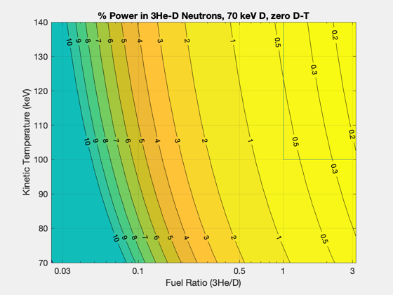 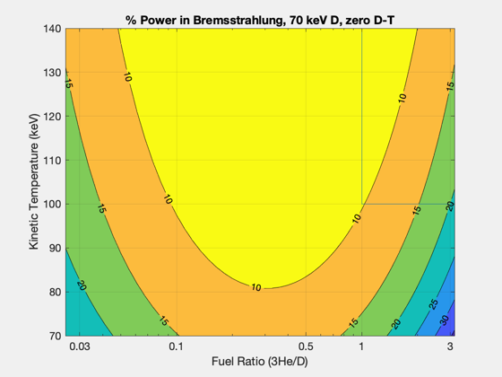 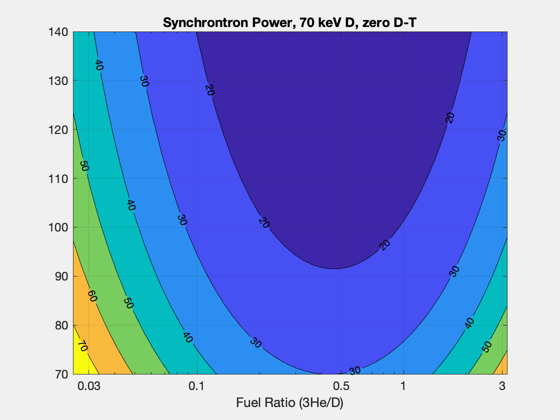 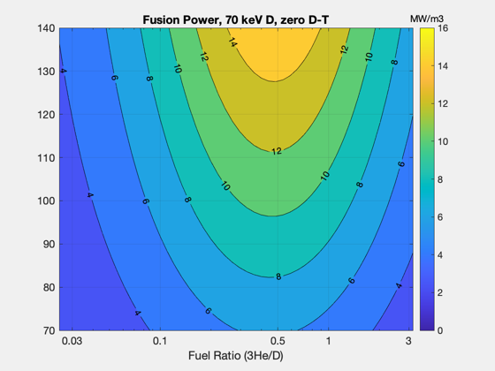
Finished
Figui; function MakePlots( ratioPlot, tempPlot, pN, pB, pS, pF, N, str ) NewFig('Neutron Power') [c,h] = contourf(ratioPlot,tempPlot,pN./pF*100,N); clabel(c,h); set(gca,'xscale','log') grid on; title(['% Power in 3He-D Neutrons, ' str]) xlabel('Fuel Ratio (3He/D)') ylabel('Kinetic Temperature (keV)') set(gca,'xtick',[0.03 0.1 0.5 1 3]) set(gcf,'colormap',flipud(parula)) line([1 1],[100 140]) line([1 3],[100 100]) NewFig('Bremsstrahlung Power') [c,h] = contourf(ratioPlot,tempPlot,pB./pF*100); clabel(c,h); set(gca,'xscale','log') grid on; title(['% Power in Bremsstrahlung, ' str]) xlabel('Fuel Ratio (3He/D)') ylabel('Kinetic Temperature (keV)') set(gca,'xtick',[0.03 0.1 0.5 1 3]) set(gcf,'colormap',flipud(parula)) line([1 1],[100 140]) line([1 3],[100 100]) NewFig('% Power in Synchrotron (10% volume)') [c,h] = contourf(ratioPlot,tempPlot,0.1*pS./pF*100); clabel(c,h); set(gca,'xscale','log') set(gca,'xtick',[0.03 0.1 0.5 1 3]) grid on; xlabel('Fuel Ratio (3He/D)') title(['Synchrontron Power, ' str]) NewFig('Total Fusion Power') [c,h] = contourf(ratioPlot,tempPlot,pF); clabel(c,h); set(gca,'xscale','log') set(gca,'xtick',[0.03 0.1 0.5 1 3]) grid on; xlabel('Fuel Ratio (3He/D)') title(['Fusion Power, ' str]) caxis([0 16]) % Note: will change if tE, etc are changed!! cb = colorbar; cb.Title.String = 'MW/m3'; end %--------------------------------------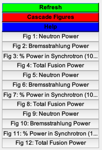